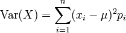

¿Y qué pasó con facebook?
Me han preguntando en varias partes que opino del hecho de que Facebook no aceptó alumnos chilenos en práctica (o pasantía).
Veamos que dice la noticia (tomada de El Dinámo):
“El gigante de las redes sociales ofrecía 12 semanas en California y casi US$ 6.000. Postularon 50 estudiantes en una oferta especial para nuestro país. Nadie logró cumplir con los requisitos.”
Veamos que pasó.
Primero, esta oferta fue canalizada por el ministerio de economía, en su sitio web publicaron el aviso, el 23 de agosto de este año. Respondieron 50 estudiantes. La convocatoria está aquí.
Primero había que llenar un formulario y enviarlo a una dirección del ministerio. El formulario está aquí.
Ahora, lo que dice el ministerio es que sólo 6 pasaron a la segunda etapa, ¿qué quiere decir eso? ¿que sólo 6 estudiantes fueron capaces de llenar este formulario? Por favor, véanlo, no hay nada más simple, claro que tiene que estar en inglés. Las preguntas eran:
-
What are your skills in C++ and/or Java? (2 lines)
-
What have you done using C++ and/or Java? (3 lines max)
-
What are your skills in PHP? (2 lines max)
-
What have you done using PHP? (3 lines max)
-
What are your skills in XHTML, CSS and Javascript? (2 lines max)
-
What have you done using HTML, CSS and JS? (3 lines max)
-
Want to add some other technical data that you think relevant, like links to your applications? (2 lines max)
-
Why would you like to go three months to Facebook? (3 lines max)
-
What contribution do you think you can do on Facebook? (3 lines max)
-
How could Chile benefit on you going to Facebook? (3 lines max)
¿Sólo 6 de los 50 pudieron contestar estas preguntas en inglés?
Yo creo que sí, la declaración de Alfredo Barriga da la pista:
"Alfredo Barriga, secretario ejecutivo de Estrategia Digital del Ministerio de Economía, el problema fue muy concreto: la falta de un inglés fluido. “No basta con saber hablar, hay que manejarlo tan bien como el castellano”, sintetizó el funcionario de Gobierno."
Esos son los hechos, por lo que he podido averiguar. Pero parece que hubo una serie de procesos previos en las universidades que en cierta manera filtraron aún más, por lo menos eso se desprende de algunos comentarios en blogs, como estos de Fayerwayer (considerando el alto grado de ruido que hay en ese foro (hay un testimonio notable, un alumno cuenta que les pidieron implementar Las Torres de Hanoi en Scala, y les dieron varias horas para eso ¿?)).
Lo otro curioso son las opiniones preocupadas de Nelson Baloian:
“”Pensé que estaríamos mejor, creo que hay potencial y me sorprende el resultado", confesó el académico. Para Baloianlos estudiantes tienen muy buenas capacidades técnicas, pero que el problema se encuentra en la falta de “habilidades blandas”, las que describe como las destrezas que les permitan “moverse mejor en los negocios, vender una idea y venderse ellos mismos”."
¿Sería eso?
Hay un comentario en FW de alguien que afirma ser uno de los 6, que dice que no tenía problemas con el idioma (de hecho, yo sospecho que los 6 que quedaron no tenían ese problema, en el ministerio deben haberse asegurado de no pasar esa vergüenza), y está el testimonio de Ignacio Parada:
Ignacio tiene una explicación diferente, “faltó preparación” aseguró. Relata que el proceso fue muy difícil, “hice tres entrevistas durante dos semanas, el nivel era altísimo y fue aumentando cada vez más”. Las pruebas se basaban en estructura de datos y algoritmos, “cosa en la quenosotros no estamos particularmente entrenados” explicó.
Y yo le creo a Ignacio.
Facebook buscaba malabaristas, y ellos, a diferencia de muchos seleccionadores chilenos, les piden a sus postulantes que muestren que saben hacer.
¿Cuantos estudiantes son capaces de resolver un desafío de programación tan simple como el de más abajo en media hora?
Y Facebook, Google, Microsoft, Yahoo, buscan desarrolladores capaces de resolver test más avanzados que el que les presento abajo.
Lo del idioma fue una razón, importante, porque filtró a una gran cantidad de estudiantes, y eso es grave. Pero superada esa etapa, falló la preparación, y eso es algo que las universidades deben revisar.
¿Hay jóvenes chilenos capaces de aprobar los exámenes de Facebook? Sí, los hay, el problema es que ya están trabajando ;)
Otro test simple
Acá va otro desafío simple:
“La varianza de una variable aleatoria X, con media μ (mu) se calcula así:

μ (mu) es el promedio (la suma de los Xi dividido por n).
Construya una función (en C) Var (X, n) donde X es un arreglo de valores en punto flotante, y n el tamaño del arreglo, que calcule la varianza, pero el cálculo se debe hacer en una sola pasada por el arreglo.”
Tips: asuman que todos los valores son equiprobables (es decir, pi = 1.0/N, o simplemente ignoren ese término).
Nota 1: en mi experiencia, ningún postulante al que le he presentado
esta pregunta ha respondido adecuadamente.
Nota 2: Me enfrenté a este problema dos veces en mi vida profesional, y
necesitaba hacer el cálculo en forma eficiente, y con alta precisión
numérica, es por eso que la solución evidente no sirve.